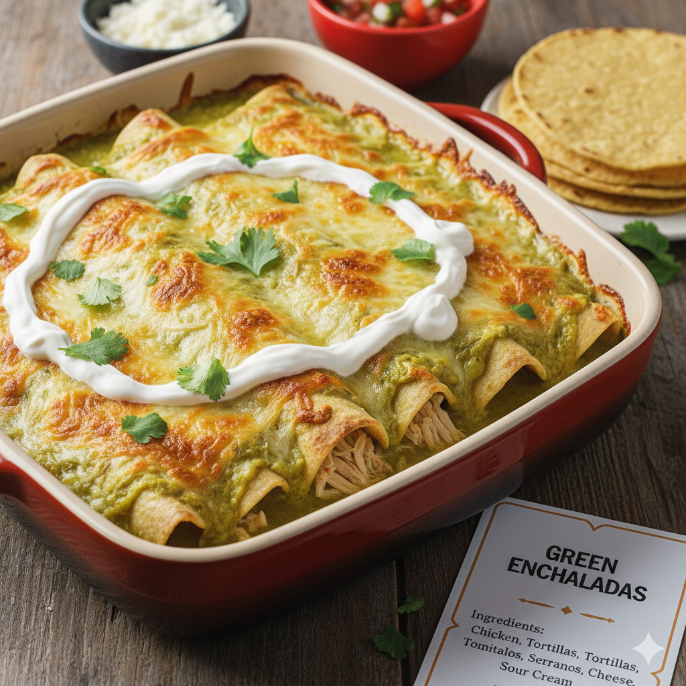

Green Enchiladas
Home

Description
Dive into the heart of Mexico with these authentic Green Enchiladas. Each corn tortilla, lightly fried and wrapped around tender shredded chicken, is a canvas for our vibrant tomatillo and serrano pepper sauce. The magic happens in the oven, where the sauce melts together with a generous layer of cheese, creating a golden, bubbly topping. Crowned with a dollop of fresh sour cream, these enchiladas are pure satisfaction and homemade warmth. Get ready for that first bite that will transport you straight to a loving family kitchen!
Ingredients
- 1 lb chicken breast, cooked and shredded
- 12 corn tortillas
- 1 cup sour cream
- 2 cups Monterry Jack or Chihuahua cheese, shredded
- 1 tbsp oil
- For the sauce:
- 1 lb tomatillos, husks removed and rinsed
- 3-4 serrano peppers (adjust to your spicy preference)
- ¼ onion
- 2 cloves garlic
- ¼ cup fresh cilantro
- Salt to taste
Instructions
- To make the sauce, boil the tomatillos, serrano peppers, onion, and garlic until tender. Blend with the cilantro and salt until smooth.
- Heat oil in a pan and lightly fry each tortilla until soft, then dip it in the sauce.
- Fill each tortilla with shredded chicken and a sprinkle of cheese. Roll them up and place them in a baking dish.
- Pour the rest of the sauce over the enchiladas, top with the remaining cheese and a drizzle of sour cream.
- Bake at 375°F (190°C) for 15-20 minutes, or until the cheese is melted and bubbly